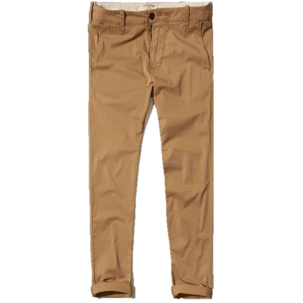

Chinos: Versatile in every season, usually fit in a very form fitting and complimentary manner. Works in every casual outfit with a variety of colors to choose from. You can purchase various qualities of chinos ranging from budget, mid-tier and raw-denim.
Oxford Cotton Button Down: While it may seem a bit too formal, a casual OCBD is an easy go to for any spring, fall or even cool summer's day. They're a breathable, tried a true design that can be bought at any price point ranging from
budget to
mid-tier to very
high-end. Just remember, if you're wearing it casually, NEVER close the top button.
Nike Killshot 2: The Killshot 2 was an instant hit and for good reason, it just works. This shoe is up there with the Stan Smiths and the German Army Trainers in the category of 'shoes you can wear with any outfit'; you can purchase them
here, however, keep in mind that they're usually out of stock.